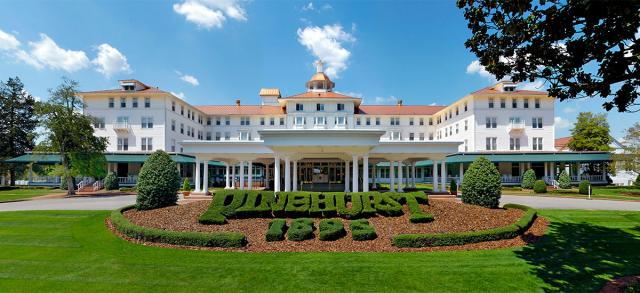

Upcoming Events
2019 Tennis Weekend
Tennis Weekend began in the 1970s as a way for all of North Carolina's tennis population to come together. Traditionally, meetings are held for the tennis professionals, tournament directors, USTA North Carolina Committees, NC Tennis Foundation Board members, and USTA North Carolina Board members. The annual meetings for both the North Carolina Tennis Association and the North Carolina Tennis Foundation are held at this event. This year we will again have an expanded vendor show.
Gold Balls

North Carolina Tennis Foundation Movie Night in Winston Salem on August 8th. We are doing a screening of a new tennis documentary called “Gold Balls.” This is a fun film with a great message that follows senior tennis players around the country as they compete for a National Championship and the chance to win a Gold Ball. The event will be held at Aperture Theater in Downtown Winston Salem and begin at 7 pm. Tickets are $22 and include a ticket to the Winston Salem Open. Proceeds from the evening will go to benefit the North Carolina Tennis Foundation.